RUNBIRD ／ AI動画事業
ディレクション前の静止画モックです。構成と画角・テロップの方向を見ていただくためのもので、ナレーション・BGMはまだ入っていません。 人物はすべてAIが作った架空の人物です（ご本人ではありません）。撮影いただける場合は、撮影のお願いのカットを本物に差し替えていきます。
42秒 ／ 1920×1080（16:9） ／ テロップ入り・ナレーション未収録・BGMなし
ダウンロード 撮影のお願い（別ページ）| # | 秒 | 映像 | テロップ | ナレーション（仮） |
|---|---|---|---|---|
| S01 | 0:00-0:02 | 筆が爪に触れる一瞬。お客様の左手と施術者の両手だけ（俯瞰・寄り） | — | （間） |
| S02 | 0:02-0:06 | 白い施術デスク・椅子・照明・カーテン（お預かりした写真） | 多摩市のネイルサロン、オルドーニです。 | 多摩市のネイルサロン、オルドーニです。 |
| S03 | 0:06-0:10 | 奥さん役が女性のお客様の話を聞いて、目元から自然に笑う（水平・2人） | おしゃべりも楽しみながら、好きな指先に。 | おしゃべりも楽しみながら、好きな指先に。 |
| S04 | 0:10-0:12 | 淡いピンクのジェルを筆で塗る手元（横から・寄り・ゆっくり寄る） | 好きな色を、日常の小さな楽しみにしませんか。 | 好きな色を、日常の小さな楽しみにしませんか。 |
| S05 | 0:12-0:14 | 仕上がったお客様の左手（俯瞰・寄り） | （S04の字幕を継続） | — |
| S06 | 0:14-0:16 | 黒×シルバーの調整式ダンベルと木目の床（お預かりした写真） | 実は、同じ場所にジムも。 | 実は、同じ場所にジムも。 |
| S07 | 0:16-0:18 | 男性のお客様がダンベルをゆっくり上げ、旦那さん役がフォームを見る（水平・2人） | パーソナルジムで、自分の体と向き合う時間。 | パーソナルジムで、自分の体と向き合う時間。 |
| S08 | 0:18-0:22 | 男性のお客様の話に旦那さん役が耳を傾ける（水平・2人・ゆっくり引く） | （S07の字幕を継続） | — |
| S09 | 0:22-0:26 | 女性と男性のお客様がネイルデスクの脇に並ぶ（水平・2人） | ネイルもジムも、カップルで一緒に通える場所。 | ネイルもジムも、カップルで一緒に通える場所。 |
| S10 | 0:26-0:29 | お預かりした扉の改装後動画（実写のまま） | — | （間） |
| S11 | 0:29-0:34 | 奥さん役を少し前、旦那さん役を隣に。明るい笑顔と控えめな笑顔でお迎え（水平・2人） | 夫婦で営む、アットホームなオルドーニへ。 | 夫婦で営む、アットホームなオルドーニへ。 |
| S12 | 0:34-0:42 | 店内写真を暗く落として、店名・電話・検索窓 | ORDOgni／ネイルサロン ＆ パーソナルジム／080-1663-1617／多摩市 ORDOgni（検索） | オルドーニ。ご来店・お問い合わせ、お待ちしています。 |
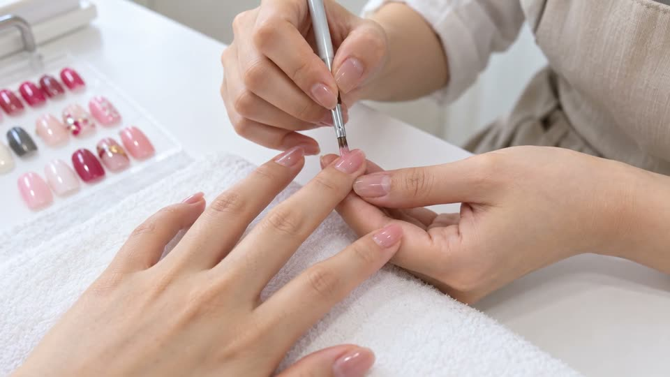
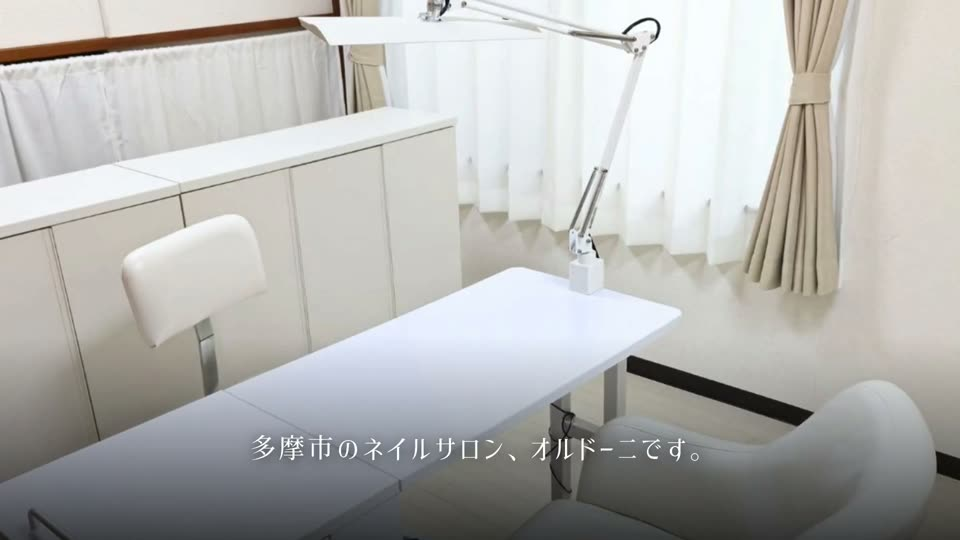
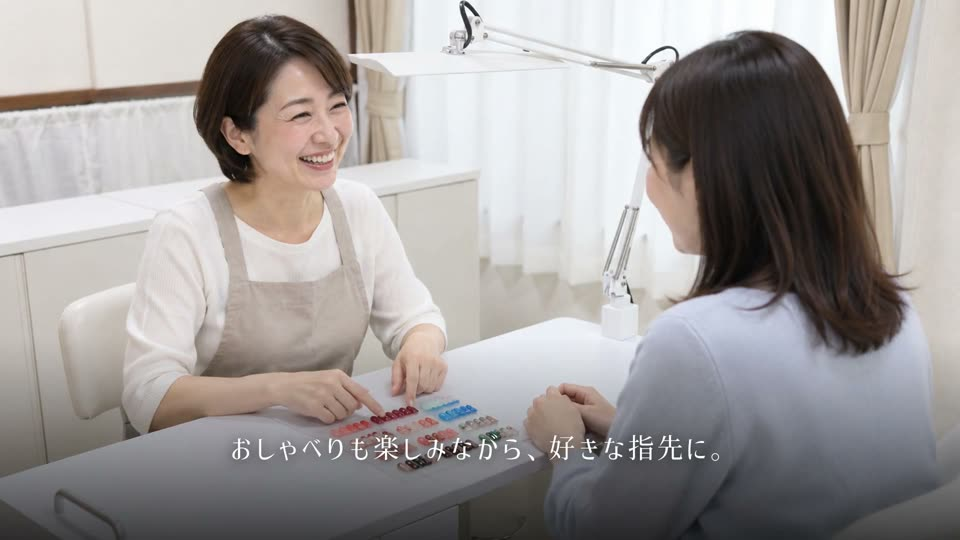
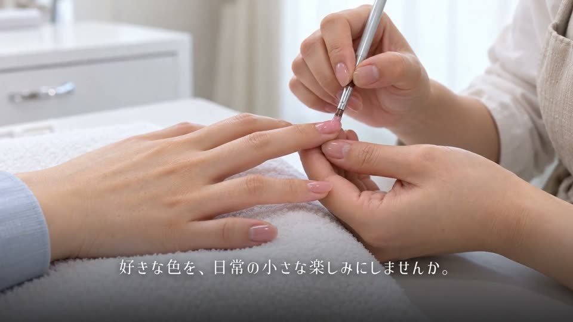
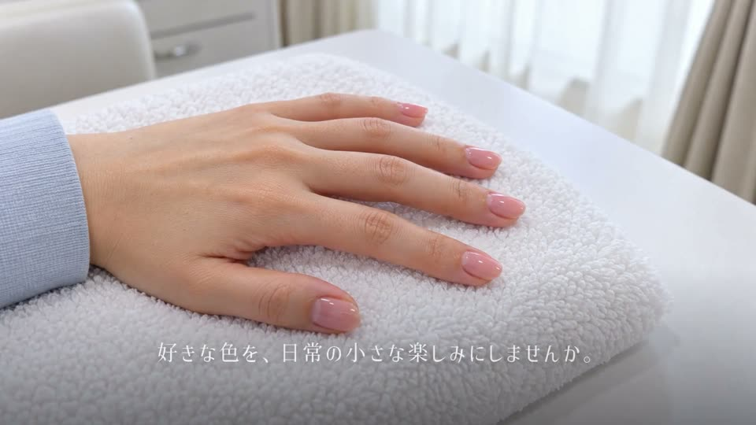
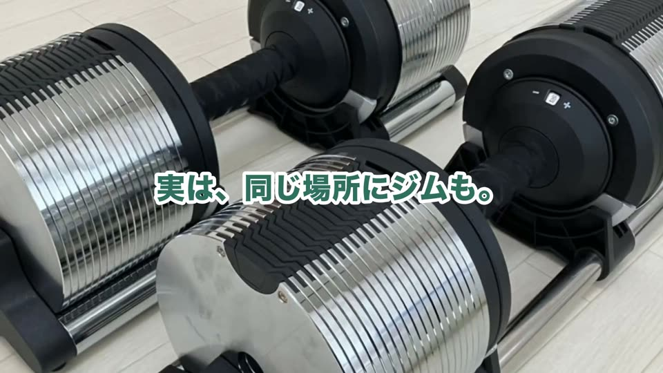
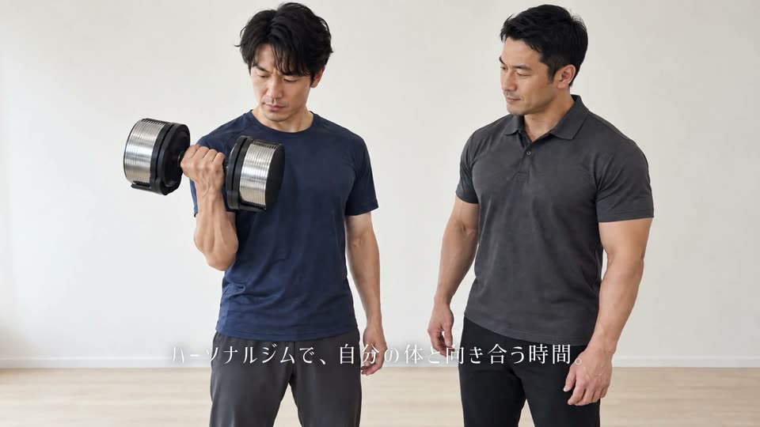
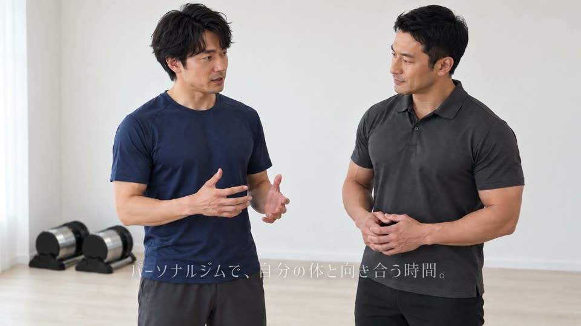
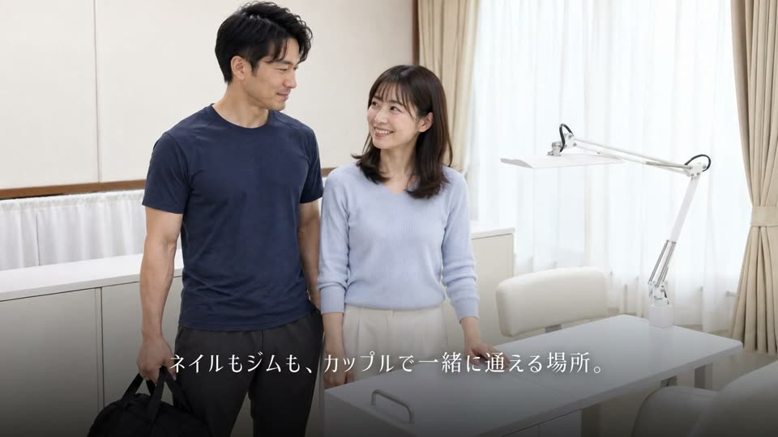
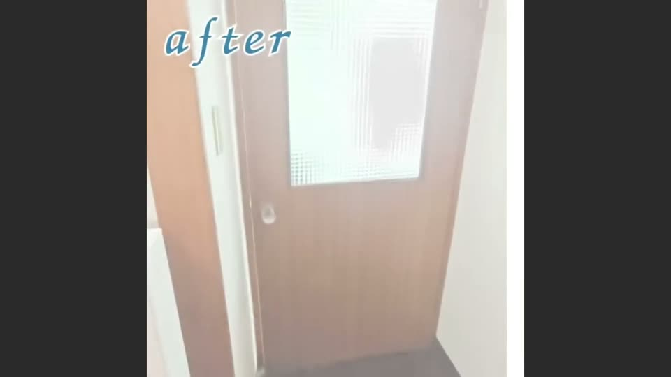
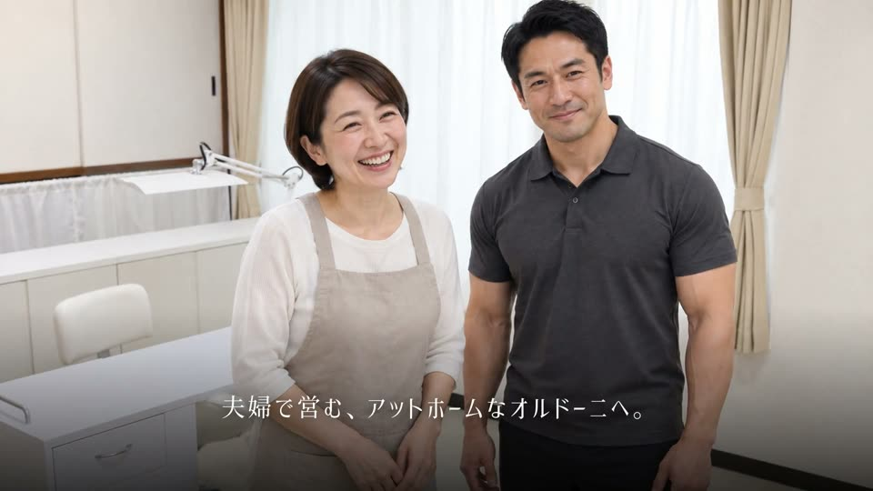
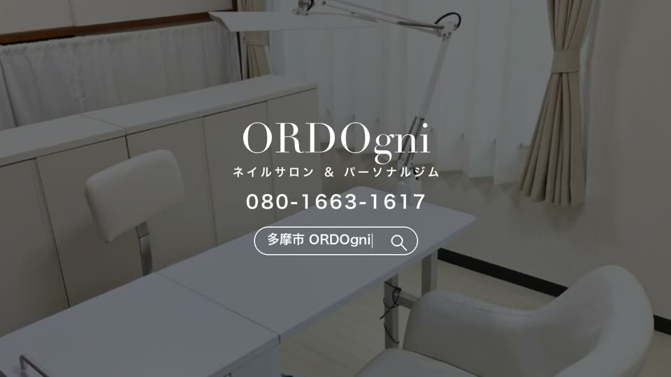
複数の目的が1つの場所で叶う、という打ち出し方の着想として参考にしました。構成をそのままなぞったものではありません。
| 項目 | いまの仮置き | ご確認 |
|---|---|---|
| ご本人の出演 | 奥さん役・旦那さん役はAIの架空の人物 | ご本人で作り直す場合、お顔の写真（各3枚）をいただけますか |
| ジム側の内装 | ダンベルの写真だけを元に作ったため、背景が無地の壁 | ジム側の店内写真（3〜5枚）をいただけますか |
| ご案内先（CTA） | 「ご来店・お問い合わせ」 | Instagram／電話／予約システムのどれを載せますか |
| 住所の表記 | 動画には入れていません | 「豊ヶ丘」「豊ケ丘」どちらの表記にしますか |
| ブランド色 | 仮の緑（S06の強調テロップ） | お店の色があれば教えてください |
| ナレーション・BGM | 未収録 | 優しいトーンの女性ナレーションを想定しています |